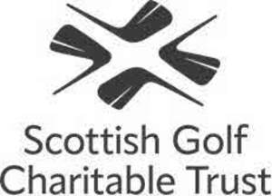

Trade Mark Journal No.2025/042 17 October 2025
UK00004275060 8 October 2025 (9,12,16,18,24,25,28,35,36,41)
Mark 1
Mark 2

- Class 9
- Sound, video and data recordings; audio recordings in the nature of recorded books; records, discs, tapes, cassettes and cards bearing sound recordings, video recordings, data, images, games, graphics, text, programs or information; computer software; computer software downloadable from the Internet; downloadable applications (computer software) for mobile telephones, handheld electronic devices, personal digital assistants, electronic organisers and electronic notepads; mobile phone apps; application software; software relating to golf, golf tournaments and golf scores; compact discs; CD-ROMs; DVD's; podcasts; computer games; video games; electronic games; computer games equipment adapted for use with TV receivers; mouse mats and mouse pads; downloadable electronic publications; electronic directories; golf club gauges; rangefinders for golf; video cameras for analysing golf swing; apparatus for measuring the speed of gold swing; sunglasses; software to enable uploading, posting, downloading, displaying, blogging, sharing or otherwise providing electronic media and information over the Internet and other communications networks; downloadable electronic media for telephones; downloadable databases in the field of golf course information; computer software applications for mobile devices containing information on travel, weather, golf courses, golf course facilities and golf tournaments and competitions; digital maps; computer software for booking golf rounds, hotels, travel and car parking.
- Class 12
- Golf trolleys, golf carts (vehicles); motorised golf carts and trolleys.
- Class 16
- Printed matter; photographs; stationery; pens; instructional and teaching material (except apparatus); printed publications; newspapers; newsletters; magazines; books; photographs; reference books; manuals; brochures; periodicals; supplements; printed journals; gift bags; greeting cards; postcards; gift wrapping paper; pens and pencils; pencil cases; decorative stickers; printed calendars; paper promotional materials; diaries; calendars; printed entertainment guides; printed tickets; decalcomanias; golf score cards; golf course guides; golf yardage books; travel guides; posters.
- Class 18
- Leather and imitations of leather; animal skins, hides; trunks and travelling bags; umbrellas and golf umbrellas; bags; sport bags; shoe bags; backpacks; rucksacks; satchels; shoulder bags; suitcases; travel cases; wallets and purses; cosmetic bags; vanity cases (not fitted); key holders; leather scorecard holders; leather yardage book covers; leather golf bag tags; luggage tags; walking sticks; wash bags; luggage; travel garment covers; sporrans; shopping bags.
- Class 24
- Textiles and textile goods; golf towels; towels and tea towels; bar towels; tartan piece goods; tartan bolting cloth; tartan travelling rugs; bed covers and bed linen; napkins; tablecloths; table runners; pillowcases; duvet covers; bedspreads; quilts; throws; blankets; cushion covers; textile place mats; travelling rugs; curtains; textile wall hangings; travelling rugs.
- Class 25
- Clothing, footwear and headgear; golf clothing; golf shirts; golf shoes and footwear; golf caps; golf skirts; t-shirts; shorts; trousers; polo shirts; hooded tops; jerseys; tracksuits; jogging bottoms; jumpers; sweaters; sweatshirts; hats; scarves; socks; outerwear; jackets; waterproof clothing; ties; blazers; nightwear; pyjamas; boxer shorts; bath robes; dressing gowns; gloves and mittens; waterproof clothing; bodywarmers; gilets.
- Class 28
- Sporting articles and equipment not included in other classes; bags adapted for carrying sporting articles; golf bags; golf balls; golf tees; golf club covers; golf ball markers; golf gloves; golf mats; golf clubs; golf drivers, putters and irons; golf practice nets; divot repair tools; golf training aids; golf bag carts and trolleys; golf bag stands; headcovers for golf clubs; grip tapes for golf clubs; golf swing alignment apparatus; toys, games and playthings; soft toys.
- Class 35
- Advertising; advertising services provided via the Internet; production of television and radio advertisements; compilation of information into computer databases; marketing, public relations, publicity and promotional services; compilation of advertisements for use as web pages on the Internet; rental of advertising space; online advertising and promotional services; promotional management for sports personalities; business management of sports people; loyalty scheme services; loyalty card services; administration of customer loyalty schemes involving discounts or incentives; loyalty, incentive and bonus program services in the field of sports; loyalty, incentive and bonus program services in the field of golf; organising, operating and supervising programs that allow members to receive prizes and discounts in exchange for points or awards; membership club services, namely providing discounts to members for the services of others; management advice and assistance; business management services relating to sport; business management of golf and sports clubs; data processing; collection of data; database marketing; database marketing and management; compilation of information into computer databases; operation and supervision of sales and promotional incentive schemes; retail services in connection with the sale of golf equipment and accessories, golf clubs, golf bags, golf clothing, golf umbrellas, golf towels, books, jewellery, articles made of leather, luggage, printed matter, pictures, stationery, key rings, toys and games, clothing, footwear, headgear, computer software, DVDs, CDs, advice and consultancy relating to the aforesaid services.
- Class 36
- Charitable fundraising; benevolent fund services; financial grant services; financial sponsorship and patronage; project financing; provision of loans; issuing tokens of value as a reward for customer loyalty; issuing of tokens of value in relation to customer loyalty schemes; issuing of tokens of value in relation to incentive and customer membership schemes; loyalty program payment processing services; fundraising; sponsorship of sporting events; real estate management; property management services; information, consultancy and advisory services relating to the aforesaid.
- Class 41
- Entertainment; sporting services; club services; organisation of sporting events and activities; provision of golf courses and golfing facilities; organising of competitions, lotteries and raffles; sport and fitness training and coaching; organising of golf tournaments and competitions; arranging national amateur and professional golf tournaments; golf academy services; provision of exhibition and museum facilities; museum services; ticket reservation services; fan club services; sport camp services; golf tuition, training and coaching; golf performance coaching; rental of golf club facilities and golf apparatus; golf driving range services; golf caddie services; golf fitness instruction; provision of training and education relating to health, fitness and nutrition; training in sports management and leadership skills; management training services; sporting management services for golfers; hospitality services (entertainment); arranging, organising and conducting of award ceremonies; entertainment and sporting information services provided via the Internet and other computer and communications networks; entertainment services featuring electronic media, multimedia content, videos, images, text, photos, user-generated content, audio content, and related information via the Internet and other communications networks; digital video, audio and multimedia entertainment publishing services; online digital publishing services; television entertainment; film production; internet games (non-downloadable); production of audio, video and audio/video recordings; production of television programmes, cable television programmes, satellite television programmes and radio programmes; arranging and conducting of workshops, training courses, conferences, seminars, lectures, congresses, symposiums and colloquiums; publication of magazines, books, texts and printed matter; publishing services; electronic publishing services; book publishing services; publication of printed matter and printed publications, books, newspapers and magazines; hospitality services; corporate hospitality; consultancy, information and advisory services relating to all of the aforesaid services.
Scottish Golf Charitable Trust Limited
Representative: Lincoln IP